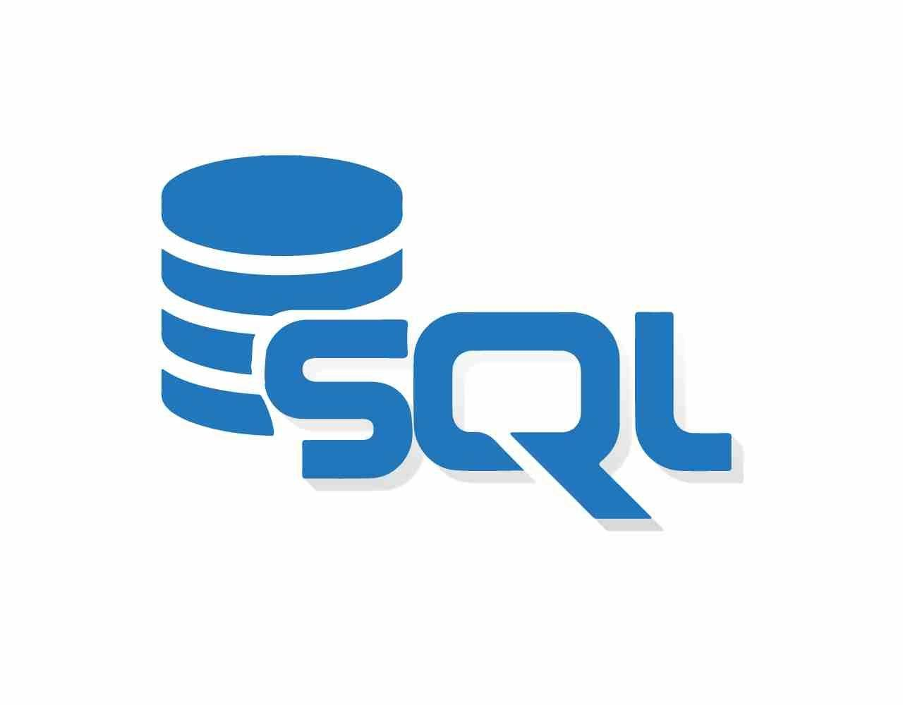

SQL - Struttura e Potere dei Database Relazionali

Il SQL (Structured Query Language), coniato nel 1974 da Donald Chamberlin nei laboratori IBM, si configura come un potente strumento destinato alla manipolazione di database secondo il modello relazionale.
Si tratta di un linguaggio standardizzato, appositamente concepito per operare efficacemente nelle seguenti aree:
- Creazione e Modifica degli Schemi di Database. Fornisce le modalità per definire la struttura dei dati, consentendo di organizzare le informazioni in modo ordinato.
- Gestione e Modifica dei Dati Memorizzati. SQL abilita l'aggiunta, la modifica e la cancellazione dei dati conservati all'interno del database, garantendo un controllo completo sulla loro integrità.
- Interrogazione dei Dati Memorizzati. Attraverso query, è possibile eseguire ricerche complesse ed estrarre dati specifici in base a criteri predeterminati.
- Creazione e Gestione di Strumenti di Controllo e Accesso ai Dati. SQL fornisce le basi per la creazione di strumenti di gestione dei dati e di accesso personalizzato, offrendo un controllo accurato sull'interazione con il database.
Attraverso costrutti di programmazione chiamati query, SQL svolge un ruolo cruciale nel consentire l'interazione con i dati, sia per la lettura, la modifica che l'eliminazione. Inoltre, tramite SQL, si possono eseguire funzioni di gestione e amministrazione del sistema di database.
Sebbene SQL sia comunemente incorporato in altri programmi che necessitano di accedere a un database, va notato che questa non è l'unica modalità di utilizzo. La sua struttura e il suo potenziale si riflettono nella sua diffusione e nel suo ruolo fondamentale nell'ambito della gestione dei dati.
Precedente: VBA - Automazione e Efficienza nelle Applicazioni Microsoft
Successivo:
C# - Un Linguaggio di Programmazione Versatile e Orientato agli Oggetti